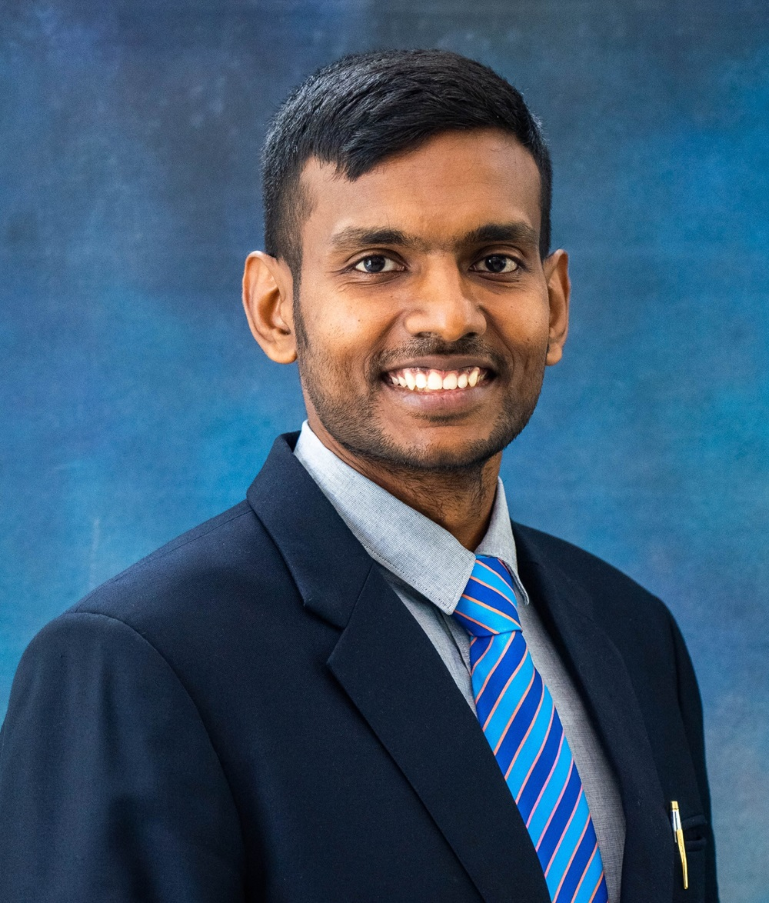
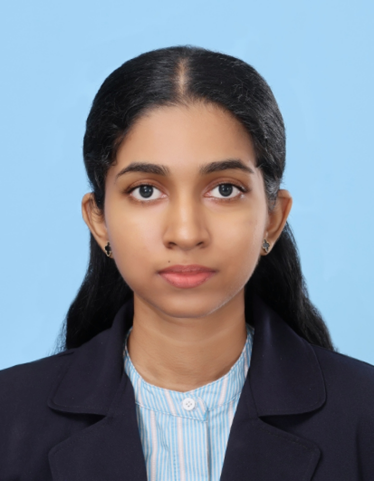
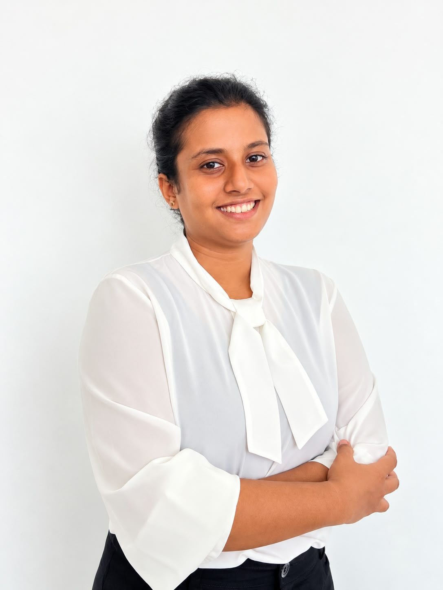
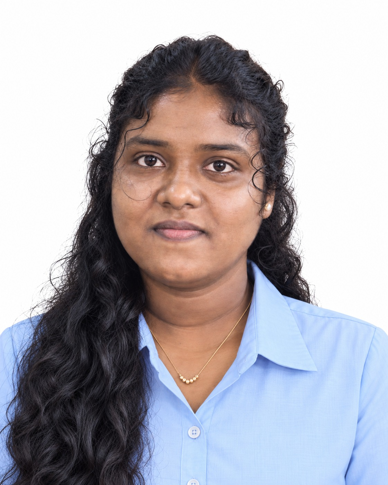

Project Supervisors
The academic staff guiding the research.
Dr. Lakmini Abeywardhana
SupervisorAssistant Professor | Department of Computer Science | Faculty of Computing

Dr. Mahima Weerasinghe
Co-supervisorHead of School of Business and AI
Research Team
Group members, their components and contact details.
Dissanayaka D. M. T. M
UndergraduateBachelor of Science (Hons) in Information Technology, specialising in Data Science

Sudugodage S. R
UndergraduateBachelor of Science (Hons) in Information Technology, specialising in Data Science

Aarabhi A. Y
UndergraduateBachelor of Science (Hons) in Information Technology, specialising in Data Science

Danishiya Appulingam
UndergraduateBachelor of Science (Hons) in Information Technology, specialising in Data Science
Achievements & Publications
Papers, conferences and competitions connected to this research.
8th IEEE International Conference on Advancements in Computing (ICAC 2026)
Research paper submitted on learning shared representations from fluid biomarkers for cross-disease neurological risk assessment.
AAIC Neuroscience Next 2027
Abstract submitted to the Alzheimer's Association conference for students and early-career researchers in neuroscience.